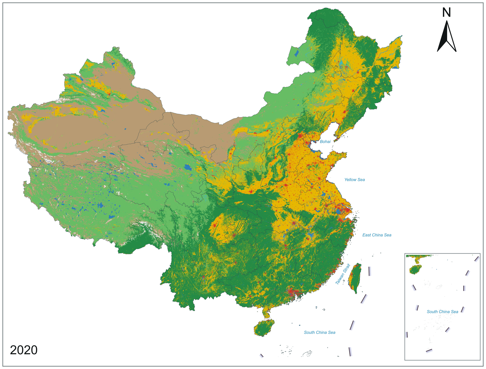
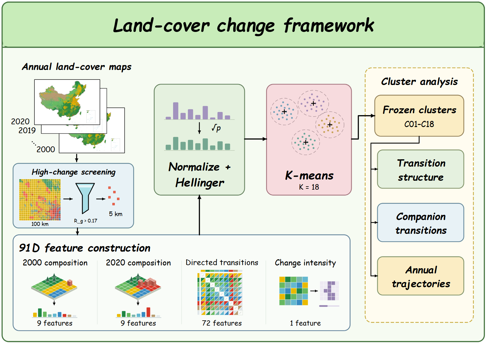
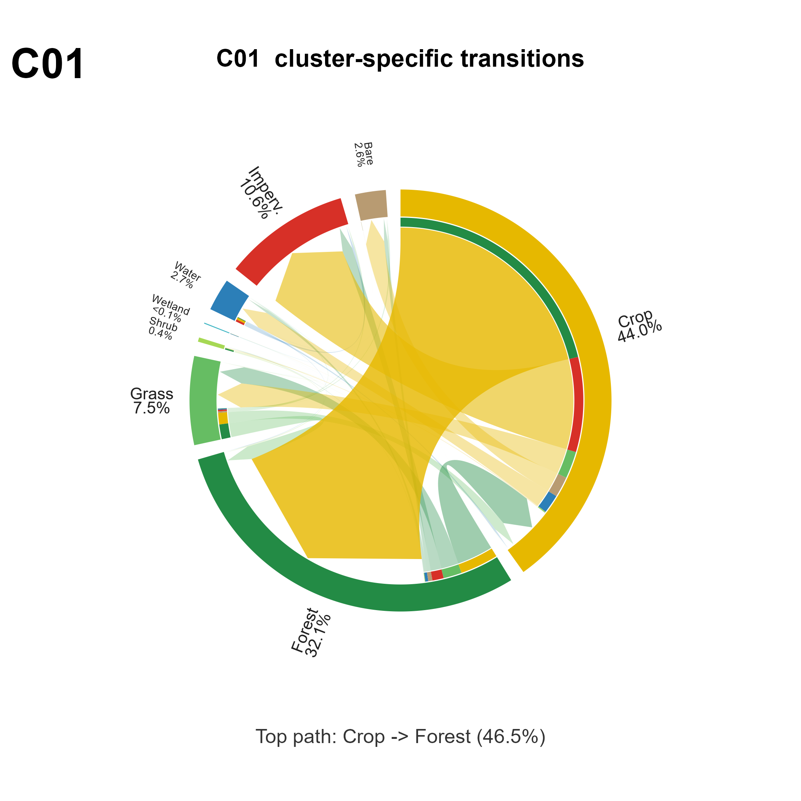

About / 关于我
你好，我是赵玉溪。
计算机技术专业研究生，
从图像理解，走向遥感应用。
本科就读于佛山大学计算机科学与技术专业，2026 年毕业。目前在计算机技术专业继续学习，关注计算机视觉、遥感影像分割与变化检测。做过姿态识别、校园平台和文本分析项目，也在把这些实践经验带到新的学习中。
Background / 学习与经历
在实践中，
慢慢积累。
学习背景
MASTER'S STUDENT · 现在
深圳大学 · 计算机技术
研究兴趣为计算机视觉与遥感影像分析，重点学习地物分割、变化检测及深度学习基础。
BACHELOR · 2026 年毕业
佛山大学
计算机科学与技术专业 · 绩点 3.72
专业排名前 5%
技能与经历
TOOLS I USE
编程 · 视觉 · 后端
C++ / Python / Java
Spring Boot / Flask / MySQL
了解机器学习、深度学习与图像处理基础。
BEYOND THE CLASSROOM
校园与服役经历
本科期间曾任学生党支部副书记两年；2020—2022 年服役。获得一等学业奖学金、广东省高校易班轻应用二等奖及“挑战杯”铜奖等。
Research / 土地覆盖变化研究
读懂地表格局，
追踪土地覆盖变化。
土地覆盖如何变化？
不同区域的变化模式有什么差异？
我关注遥感影像理解与土地覆盖变化分析。这里选取研究材料中的空间分布图、分析流程图和簇内转移图，呈现从地表格局到变化模式的分析思路。
点击任意图片，可查看完整图、放大阅读小字，或打开原图。
2020 年中国土地覆盖分布
ALCC v2 土地覆盖图，用于观察全国地表覆盖的空间格局。保留原图中的指北针与南海附图。

空间格局 · ALCC v2 · 2020打开原图 ↗
从年度影像到变化模式
基于 2000—2020 年年度土地覆盖图，依次进行高变化区域筛选、特征构建、归一化与聚类，再分析转移结构和年度轨迹。

分析流程 · 特征与聚类打开原图 ↗
C01 簇的地类转移结构
弦图展示 C01 簇内地类之间的转移关联。图中的比例仅对应该簇的统计口径，不能解释为全国转移比例或模型准确率。

转移结构 · C01打开原图 ↗
Selected Projects / 项目经历
从一个问题，
到一次实践。
本科阶段参与和独立完成的三个项目。配图为AI 概念插画，点击可查看具体分工。
Learning Notes / 课程与练习
学习中的几个小尝试。
遥感部分是概念演示，使用合成图像，不代表模型预测或实验结果。
01地物类别可视化影像与标签切换 · 概念演示↗ 02两期影像对比拖动分界线 · 交互练习↗ 03个人主页设计AI交互得到个人页面↗